Assignment 2
Housing Data: Effects of Rezoning Plans
Stationarity:
Determine whether series are stationary (use visualisation and hypothesis tests)
Code
housingdata |>
ggplot(aes(x=date,y=house_mel)) +
labs(x="Date", y="Price", title='Melbourne Median House Prices Over Time') +
geom_line()
housingdata |>
ggplot(aes(x=date,y=appt_mel)) +
labs(x="Date", y="Price", title='Melbourne Median Apartment Prices Over Time') +
geom_line()
housingdata |>
ggplot(aes(x=date,y=house_syd)) +
labs(x="Date", y="Price", title='Sydney Median House Prices Over Time') +
geom_line()
housingdata |>
ggplot(aes(x=date,y=appt_syd)) +
labs(x="Date", y="Price", title='Sydney Median Apartment Prices Over Time') +
geom_line()


Visually, all series look non-stationary as their means are clearly time dependent and all series exhibit an upwards trend. Doesn’t seem to be any seasonality.
Formal Hypothesis tests
Melbourne Housing Prices
Code
ACF(housingdata, house_mel) |>
autoplot() +
labs(x="Lag", y="ACF", title="ACF of Melbourne Housing data")
PACF(housingdata, house_mel) |>
autoplot() +
labs(x="Lag", y="PACF", title="PACF of Melbourne Housing data")
# ADF test (hm_ stands for homes melbourne)
hm_adf_result <- ur.df(housingdata$house_mel, type = "drift", selectlags = "AIC")
hm_adf_result_sum <- summary(hm_adf_result)
hm_adf_teststat <- round(hm_adf_result_sum@teststat[1], 2)
hm_adf_cval <- round(hm_adf_result_sum@cval[1,2], 2)
#KPSS test
hm_kpss_result <- kpss.test(na.omit(housingdata$house_mel))
hm_kpss_pval <- round(hm_kpss_result$p.value, 2)

For the ADF test: The \(\tau\) statistic was given as \(-0.6\), which is greater than the critical value of \(-2.89\) at the \(5\%\) significance level. Thus, we fail to reject \(H_0\) and conclude that the series may have a unit root and differencing is necessary.
For the KPSS test: the \(p\)-value was given as \(0.01\), so we reject the null in favour of the series being non stationary, which supports the conclusion from the ADF test.
From the PACF, the strong spike at lag \(1\) suggests the presence of persistence in the series, which is consistent with non-stationary behaviour. Combined with formal unit root tests, this indicates that the series likely becomes stationary after first order differencing. Therefore, the Melbourne housing series is likely \(I(1)\).
Melbourne Apartment Prices
Code
ACF(housingdata, appt_mel) |>
autoplot() +
labs(x="Lag", y="ACF", title="ACF of Melbourne Apartment data")
PACF(housingdata, appt_mel) |>
autoplot() +
labs(x="Lag", y="PACF", title="PACF of Melbourne Apartment data")
# ADF test (am_ stands for apartments melbourne)
am_adf_result <- ur.df(housingdata$appt_mel, type = "drift", selectlags = "AIC")
am_adf_result_sum <- summary(am_adf_result)
am_adf_teststat <- round(am_adf_result_sum@teststat[1], 2)
am_adf_cval <- round(am_adf_result_sum@cval[1,2], 2)
#KPSS test
am_kpss_result <- kpss.test(na.omit(housingdata$appt_mel))
am_kpss_pval <- round(am_kpss_result$p.value, 2)

For the ADF test: The \(\tau\) statistic was given as \(-1.35\), which is greater than the critical value of \(-2.89\) at the \(5\%\) significance level. Thus, we fail to reject \(H_0\) and conclude that the series may have a unit root and differencing is necessary.
For the KPSS test: the \(p\)-value was given as \(0.01\), so we reject the null in favour of the series being non stationary, which supports the conclusion from the ADF test.
From the PACF, the strong spike at lag \(1\) suggests the presence of persistence in the series, which is consistent with non-stationary behaviour. Combined with formal unit root tests, this indicates that the series likely becomes stationary after first differencing. Therefore, the Melbourne apartment series is likely \(I(1)\).
Sydney Housing Prices
Code
ACF(housingdata, house_syd) |>
autoplot() +
labs(x="Lag", y="ACF", title="ACF of Sydney Housing data")
PACF(housingdata, house_syd) |>
autoplot() +
labs(x="Lag", y="PACF", title="PACF of Sydney Housing data")
# ADF test (hs_ stands for houses sydney)
hs_adf_result <- ur.df(housingdata$house_syd, type = "drift", selectlags = "AIC")
hs_adf_result_sum <- summary(hs_adf_result)
hs_adf_teststat <- round(hs_adf_result_sum@teststat[1], 2)
hs_adf_cval <- round(hs_adf_result_sum@cval[1,2], 2)
#KPSS test
hs_kpss_result <- kpss.test(na.omit(housingdata$house_syd))
hs_kpss_pval <- round(hs_kpss_result$p.value, 2)

For the ADF test: The \(\tau\) statistic was given as \(1.07\), which is greater than the critical value of \(-2.89\) at the \(5\%\) significance level. Thus, we fail to reject \(H_0\) and conclude that the series may have a unit root and differencing is necessary.
For the KPSS test: the \(p\)-value was given as \(0.01\), so we reject the null in favour of the series being non stationary, which supports the conclusion from the ADF test.
From the PACF, the strong spike at lag \(1\) suggests the presence of persistence in the series, which is consistent with non-stationary behaviour. Combined with formal unit root tests, this indicates that the series likely becomes stationary after first differencing. Therefore, the Sydney housing series is likely \(I(1)\).
Sydney Apartment Prices
Code
ACF(housingdata, appt_syd) |>
autoplot() +
labs(x="Lag", y="ACF", title="ACF of Sydney Apartment data")
PACF(housingdata, appt_syd) |>
autoplot() +
labs(x="Lag", y="PACF", title="PACF of Sydney Apartment data")
# ADF test (as_ stands for apartments sydney)
as_adf_result <- ur.df(housingdata$appt_syd, type = "drift", selectlags = "AIC")
as_adf_result_sum <- summary(as_adf_result)
as_adf_teststat <- round(as_adf_result_sum@teststat[1], 2)
as_adf_cval <- round(as_adf_result_sum@cval[1,2], 2)
#KPSS test
as_kpss_result <- kpss.test(na.omit(housingdata$appt_syd))
as_kpss_pval <- round(as_kpss_result$p.value, 2)

For the ADF test: The \(\tau\) statistic was given as \(-0.2\), which is greater than the critical value of \(-2.89\) at the \(5\%\) significance level. Thus, we fail to reject \(H_0\) and conclude that the series may have a unit root and differencing is necessary.
For the KPSS test: the \(p\)-value was given as \(0.01\), so we reject the null in favour of the series being non stationary, which supports the conclusion from the ADF test.
From the PACF, the strong spike at lag \(1\) suggests the presence of persistence in the series, which is consistent with non-stationary behaviour. Combined with formal unit root tests, this indicates that the series likely becomes stationary after first differencing. Therefore, the Sydney apartment series is likely \(I(1)\).
Conclusion on Stationarity:
All series are determined to be non-stationary and have unit roots. All are integrated of order \(1\)-\(I(1)\); meaning that taking the first difference of each series should make each series stationary.
Cointegration
Pairs: - Houseprices in Melbourne and Sydney
- Apartment prices in Melbourne and Sydney
- Apartment prices in Melbourne and house prices in Melbourne
- House prices in Sydney and house prices in Sydney
Test for cointegration of each pair
Use Engle-Granger procedure as dealing with pairs
1. Run long run regression \(y_t = a + \beta x_t + u_t\)
2. Save \(u_t\)
3. Test the residuals for stationarity (ADF test on ut)
\(H_0\): resids have a unit root (no cointegration)
\(H_1\): resids are stationary (cointegration)
Houseprices in Melbourne and Sydney
\(p\)-value was given as \(0.93\) meaning there is insufficient evidence to reject \(H_0\), indicating that the residuals may be non stationary. Thus, there is no evidence of cointegration between house prices in melbourne and sydney
Apartment prices in Melbourne and Sydney
\(p\)-value was given as \(0.46\) meaning there is insufficient evidence to reject \(H_0\), indicating that the residuals may be non stationary. Thus, there is no evidence of cointegration between apartment prices in melbourne and sydney
Apartment prices in Melbourne and house prices in Melbourne
\(p\)-value was given as \(0.44\) meaning there is insufficient evidence to reject \(H_0\), indicating that the residuals may be non stationary. Thus, there is no evidence of cointegration between apartment prices and house prices in melbourne
Apartment prices in Sydney and house prices in Sydney
\(p\)-value was given as \(0.92\) meaning there is insufficient evidence to reject \(H_0\), indicating that the residuals may be non stationary. Thus, there is no evidence of cointegration between apartment prices and house prices in Sydney
Conclusion for pair wise cointegrations
No cointegration between the given pairs, meaning the two price series only move together in the short run and don’t move around a common long run equilibrium.
Does one (or more) cointegrating relationship exist among all four variables
Johansen Test
Following the PACF’s, we will want one lag in differences so for the Johansen test we use K = 2
Code
housing_jo_summ <- housingdata |>
tibble() |>
select(house_mel, appt_mel, house_syd, appt_syd) |>
ca.jo(
ecdet = "const",
type="eigen",
K = 2,
spec="longrun",
season=4) |>
summary()
# Transform Johansen test results into readable table
housing_jo_summ |> pluck("cval") |>
cbind(
housing_jo_summ |> pluck("teststat")
) |>
as.data.frame() |>
setNames(c("10pct", "5pct", "1pct", "test")) |>
mutate(
hypothesis = c("r <= 3", "r <= 2", "r <= 1", "r = 0"),
.before = test
) |>
select(hypothesis, test, `10pct`, `5pct`, `1pct`) |>
tibble() |>
knitr::kable(
col.names = c("Test", "Statistic", "10%", "5%", "1%"),
digits = 2,
caption = "Johansen Cointegration Test Results"
)As the test is not rejected at any level, we can say that there are no cointegrating relationships
Conclusion From Johansen Test
No cointegrating relationships were found, which matches the results from the Engle Granger tests in which the tested pairs did not have a cointegrating relationship, thus while there may be short run relationships, there are no stable long-run equilibrium relationships. An explanation could be due to city-specific or property-type factors.
Models for the Data
Model the data using one or more of - VAR model
- Error correction model
- ARDL model
- VECM model
VAR Model
We will be using a VAR model on the first differences of the series. This is due to all series being \(I(1)\) and there being no evidence of cointegration, meaning that there are no long run relationships that have to be modelled with a VECM.
This lets us: - Capture short run interdependence - Evaluate how shocks to one market affects others
\[ y_{t}=\begin{bmatrix} \Delta \texttt{house\_mel} \\ \Delta \texttt{house\_syd} \\ \Delta \texttt{appt\_mel} \\ \Delta \texttt{appt\_syd} \end{bmatrix} \]
And the model is
\[
\mathbf{y_{t}} = \mathbf{c}+\mathbf{\Phi y_{t-1}}+\mathbf{\varepsilon_{t}}
\]
Where \(\mathbf{c}\) is a \(4\times 1\) intercept vector and \(\mathbf{\Phi}\) is a \(4\times 4\) coefficient matrix.
Code
var_housingdata <- housingdata |>
mutate(
d_house_mel = c(NA, diff(house_mel)),
d_appt_mel = c(NA, diff(appt_mel)),
d_house_syd = c(NA, diff(house_syd)),
d_appt_syd = c(NA, diff(appt_syd))
) |>
drop_na()
var_housing <- var_housingdata |>
tibble() |>
dplyr::select(d_house_mel, d_appt_mel, d_house_syd, d_appt_syd) |>
VAR(p=1, type = "const")
var_housing |> irf(
# The variable receiving the shock
impulse = "d_appt_mel",
# Affected variables
response = c("d_house_syd", "d_appt_syd", "d_house_mel", "d_appt_mel"),
# Number of periods to trace the effect (e.g. 12 quarters = 3 years)
n.ahead = 4,
) |>
plot()
Stationarity
his analysis will be conducted using price data for Melbourne house (\(\texttt{house\_mel}\)) and apartment (\(\texttt{appt\_mel}\)) prices, along with Sydney house (\(\texttt{house\_syd}\)) and apartment (\(\texttt{appt\_syd}\)) prices. These data sets range from Q3 2003 to Q2 2025.
To guide the first steps, it must be determined whether the series mentioned are stationary, or if they have a unit root and require differencing of the series. Only after this is determined can the analysis move onto modelling and forecasting effects.
Original Series
Time Series Plots
Code
housingdata |>
ggplot(aes(x=date,y=house_mel)) +
labs(x="Date", y="Price", title='Melbourne Median House Prices Over Time') +
geom_line()
housingdata |>
ggplot(aes(x=date,y=appt_mel)) +
labs(x="Date", y="Price", title='Melbourne Median Apartment Prices Over Time') +
geom_line()
housingdata |>
ggplot(aes(x=date,y=house_syd)) +
labs(x="Date", y="Price", title='Sydney Median House Prices Over Time') +
geom_line()
housingdata |>
ggplot(aes(x=date,y=appt_syd)) +
labs(x="Date", y="Price", title='Sydney Median Apartment Prices Over Time') +
geom_line()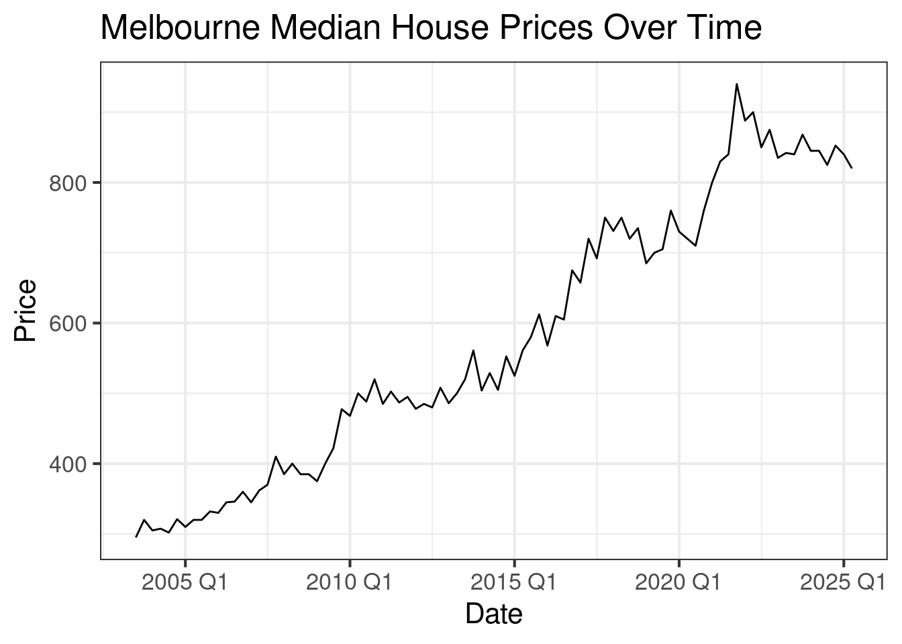
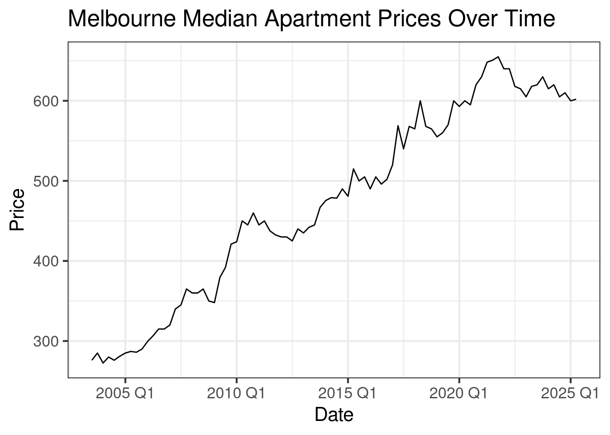
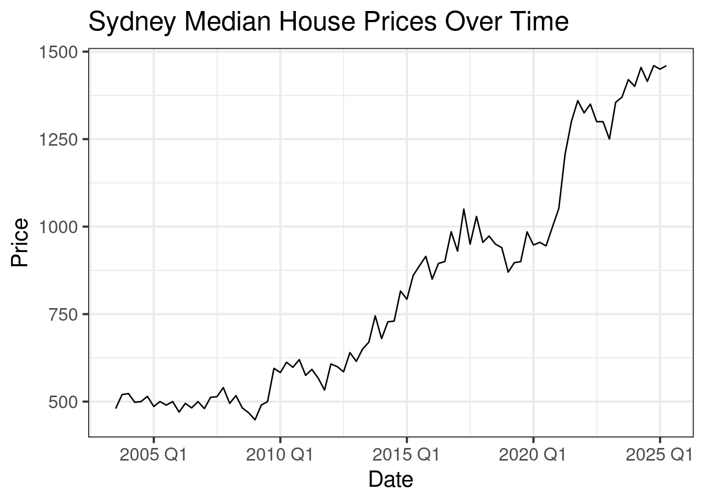
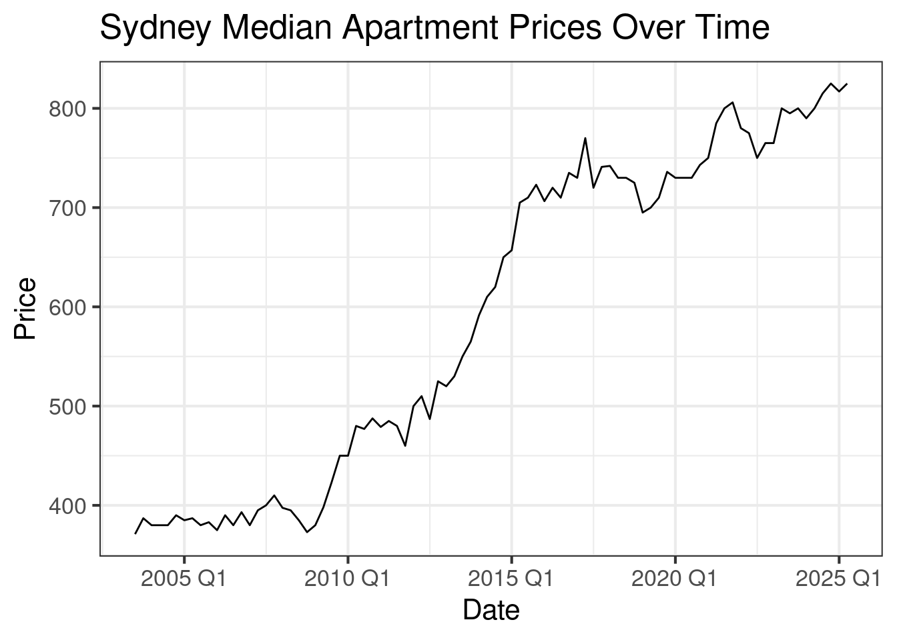
Upon visual inspection of the time series plots in levels, all have an overall positive trend, and seem to be random walks with drift. The means of all series are time-dependent, indicating non-stationary. This is typical of most price data and will guide our reasoning for model specification.
ACF’s for Each Series
Code
ACF(housingdata, house_mel) |>
autoplot() +
labs(x="Lag", y="ACF", title="ACF of Melbourne Housing data")
ACF(housingdata, appt_mel) |>
autoplot() +
labs(x="Lag", y="ACF", title="ACF of Melbourne Apartment data")
ACF(housingdata, house_syd) |>
autoplot() +
labs(x="Lag", y="ACF", title="ACF of Sydney Housing data")
ACF(housingdata, appt_syd) |>
autoplot() +
labs(x="Lag", y="ACF", title="ACF of Sydney Apartment data")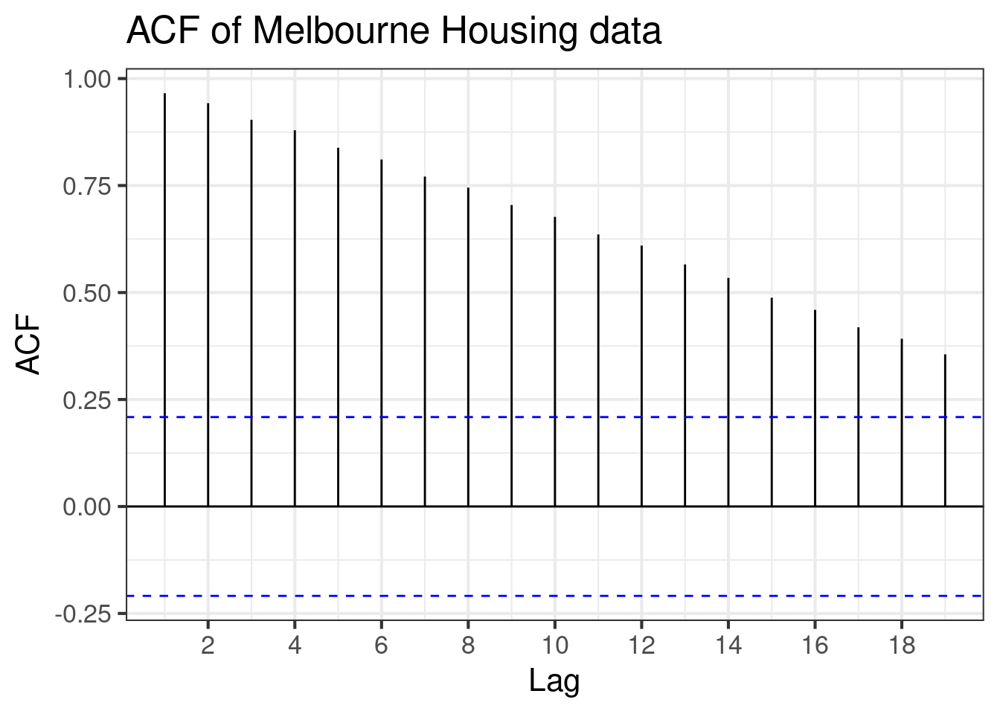
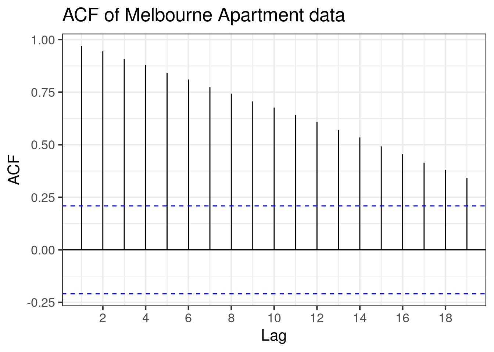
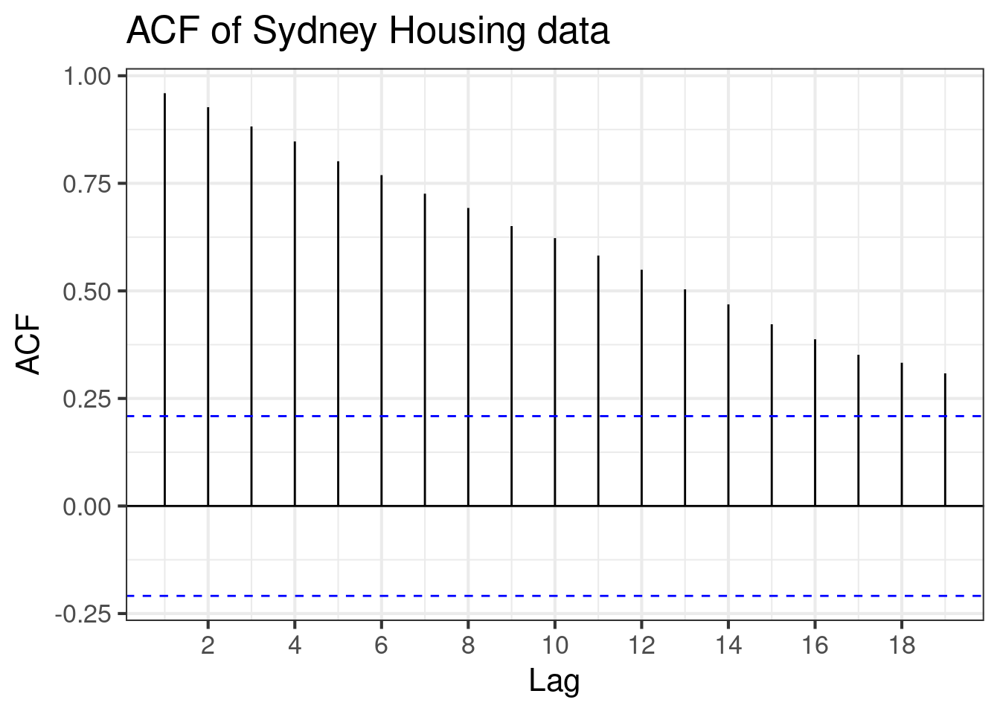

PACF’s for Each Series
Code
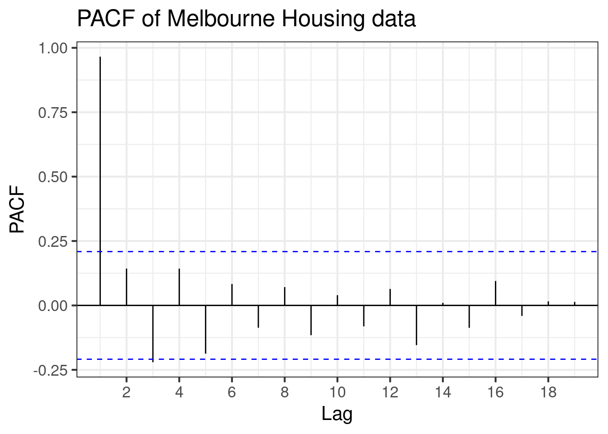
Code
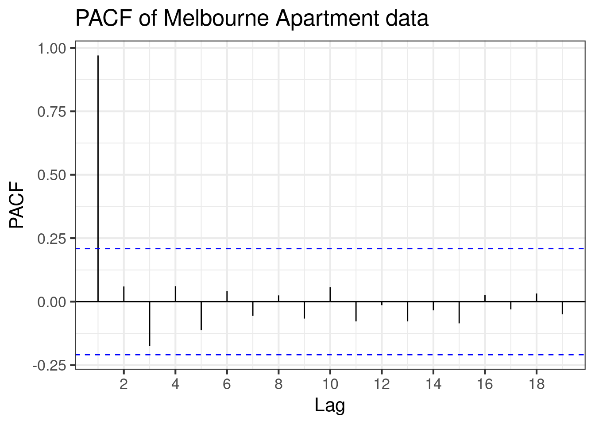
Code

Code
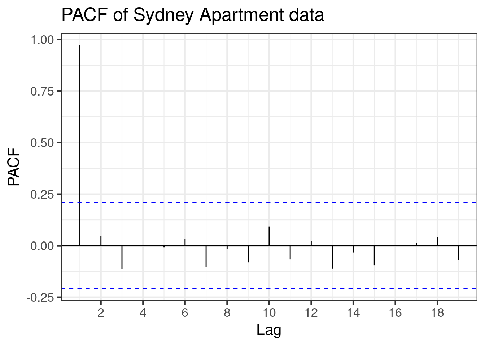
The ACF’s for all series decay very slowly toward zero, which is characteristic of non-stationary processes such as those with unit roots. This suggests that shocks to the series have persistent effects, and that future values are correlated with past values. This makes intuitive sense for housing prices as they tend to evolve gradually over time rather than fluctuating randomly from period to period, as housing markets exhibit strong inertia and adjustment frictions, such as regulatory and supply constraints.
The PACF’s for all series have spikes at the first lag and quickly drop off, suggesting strong dependence on only the observation immediately before. This suggests most of the residual correlation is captured by the first lag which is consistent with a unit root. The spike at the first lag indicates that the series likely becomes stationary after taking first differences, which will remove the unit root. This is typical of housing price data as changes in prices are gradual and are strongly influenced by more recent movements.
Formal Hypothesis tests to determine stationarity (ADF and KPSS):
Code
# ADF test (hm_ stands for homes melbourne)
hm_adf_result <- ur.df(housingdata$house_mel, type = "drift", selectlags = "AIC")
hm_adf_result_sum <- summary(hm_adf_result)
hm_adf_teststat <- round(hm_adf_result_sum@teststat[1], 2)
hm_adf_cval <- round(hm_adf_result_sum@cval[1,2], 2)
#KPSS test
hm_kpss_result <- kpss.test(na.omit(housingdata$house_mel))
hm_kpss_pval <- round(hm_kpss_result$p.value, 2)
# ADF test (am_ stands for apartments melbourne)
am_adf_result <- ur.df(housingdata$appt_mel, type = "drift", selectlags = "AIC")
am_adf_result_sum <- summary(am_adf_result)
am_adf_teststat <- round(am_adf_result_sum@teststat[1], 2)
am_adf_cval <- round(am_adf_result_sum@cval[1,2], 2)
#KPSS test
am_kpss_result <- kpss.test(na.omit(housingdata$appt_mel))
am_kpss_pval <- round(am_kpss_result$p.value, 2)
# ADF test (hs_ stands for houses sydney)
hs_adf_result <- ur.df(housingdata$house_syd, type = "drift", selectlags = "AIC")
hs_adf_result_sum <- summary(hs_adf_result)
hs_adf_teststat <- round(hs_adf_result_sum@teststat[1], 2)
hs_adf_cval <- round(hs_adf_result_sum@cval[1,2], 2)
#KPSS test
hs_kpss_result <- kpss.test(na.omit(housingdata$house_syd))
hs_kpss_pval <- round(hs_kpss_result$p.value, 2)
# ADF test (as_ stands for apartments sydney)
as_adf_result <- ur.df(housingdata$appt_syd, type = "drift", selectlags = "AIC")
as_adf_result_sum <- summary(as_adf_result)
as_adf_teststat <- round(as_adf_result_sum@teststat[1], 2)
as_adf_cval <- round(as_adf_result_sum@cval[1,2], 2)
#KPSS test
as_kpss_result <- kpss.test(na.omit(housingdata$appt_syd))
as_kpss_pval <- round(as_kpss_result$p.value, 2)Code
# Create summary table of stationarity tests
stationarity_summary <- data.frame(
Metric = c("ADF Test Stat", "ADF Result", "KPSS p-value", "KPSS Result"),
House_mel = c(hm_adf_teststat, "Fail to reject", hm_kpss_pval, "Reject"),
Appt_mel = c(am_adf_teststat, "Fail to reject", am_kpss_pval, "Reject"),
House_syd = c(hs_adf_teststat, "Fail to reject", hs_kpss_pval, "Reject"),
Appt_syd = c(as_adf_teststat, "Fail to reject", as_kpss_pval, "Reject")
)
stationarity_summary |>
knitr::kable(
digits = 2,
caption = "Stationarity Test Results Summary"
)| Metric | House_mel | Appt_mel | House_syd | Appt_syd |
|---|---|---|---|---|
| ADF Test Stat | -0.6 | -1.35 | 1.07 | -0.2 |
| ADF Result | Fail to reject | Fail to reject | Fail to reject | Fail to reject |
| KPSS p-value | 0.01 | 0.01 | 0.01 | 0.01 |
| KPSS Result | Reject | Reject | Reject | Reject |
The ADF test null is that the series is non-stationary and thus has a unit root. This test is left sided with the null being rejected if the ADF test statistic is less than the critical value. The critical value at the \(5\%\) level is \(-2.89\). As all the test statistics are greater than the critical value, there is insufficient evidence to reject the null, thus conclude insufficient evidence to suggest stationarity in any of the series.
The KPSS test is a reversal of the ADF test, where the null is that the series is stationary, and the alternative is non-stationarity. For this test a \(p\)-value is given for its simplicity, where a \(p\)-value less than \(0.05\) results in a rejection. As all \(p\)-values are \(0.01\), the conclusion is that the series are all non-stationary, which supports the conclusion from the ADF.
All series are determined to be non-stationary and have unit roots. According to the PACF’s, all are \(I(1)\) - first order integrated – meaning that taking the first difference of each series should make each stationary.
First Difference Series
Differenced Series Plots
Code
housingdata_diff |>
ggplot(aes(x=date,y=house_mel)) +
labs(x="Date", y="Price", title='Melbourne Differenced Median House Prices Over Time') +
geom_line()
housingdata_diff |>
ggplot(aes(x=date,y=appt_mel)) +
labs(x="Date", y="Price", title='Melbourne Differenced Median Apartment Prices Over Time') +
geom_line()
housingdata_diff |>
ggplot(aes(x=date,y=house_syd)) +
labs(x="Date", y="Price", title='Sydney Differenced Median House Prices Over Time') +
geom_line()
housingdata_diff |>
ggplot(aes(x=date,y=appt_syd)) +
labs(x="Date", y="Price", title='Sydney Differenced Median Apartment Prices Over Time') +
geom_line()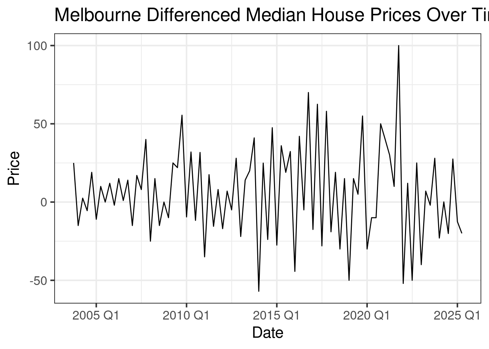
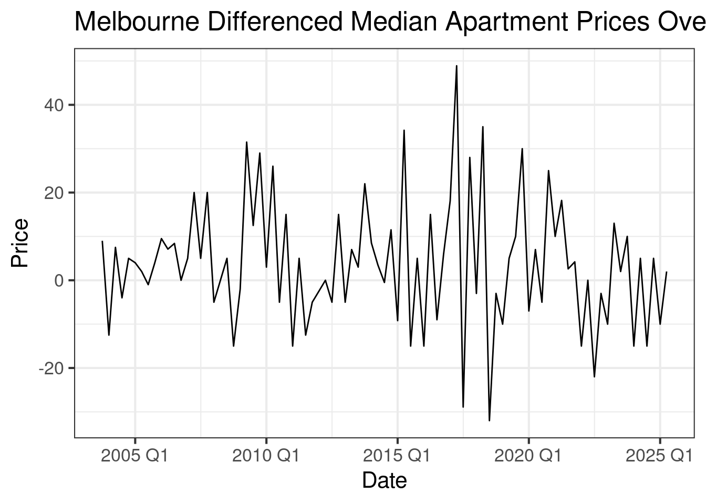
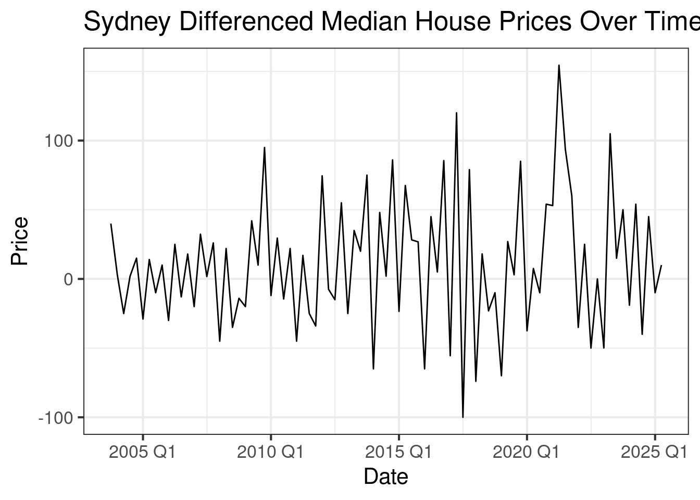
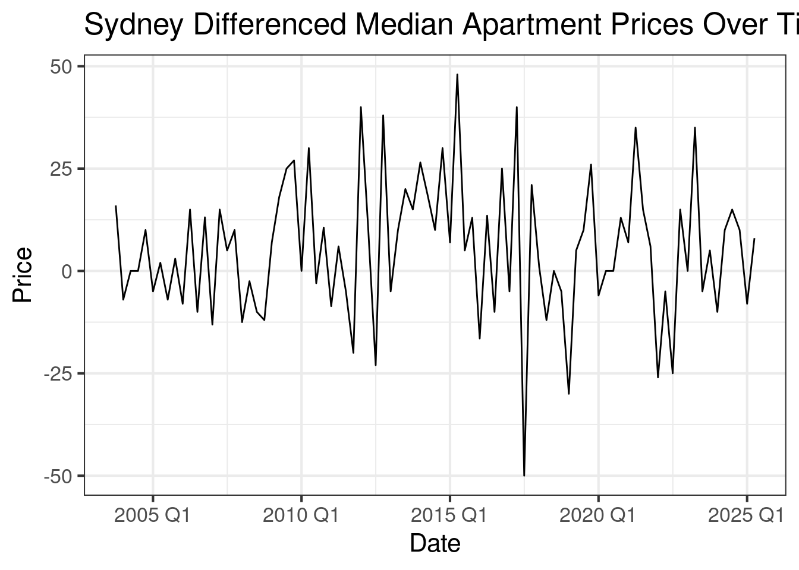
The series of the first order differences looks stationary as there is a constant mean of \(0\) across time and displays mean reverting behaviour. There are no obvious trends nor seasonality, however there appears to be a period of high volatility from \(2015\) to roughly \(2018\) on all plots.
Differenced series ACF’s
Code
housingdata_diff |>
ACF(house_mel) |>
autoplot() +
labs(x="Lag", y="ACF", title="ACF of Differenced Melbourne Housing data")
housingdata_diff |>
ACF(appt_mel) |>
autoplot() +
labs(x="Lag", y="ACF", title="ACF of Differenced Melbourne Apartment data")
housingdata_diff |>
ACF(house_syd) |>
autoplot() +
labs(x="Lag", y="ACF", title="ACF of Differenced Sydney Housing data")
housingdata_diff |>
ACF(appt_syd) |>
autoplot() +
labs(x="Lag", y="ACF", title="ACF of Differenced Sydney Apartment data")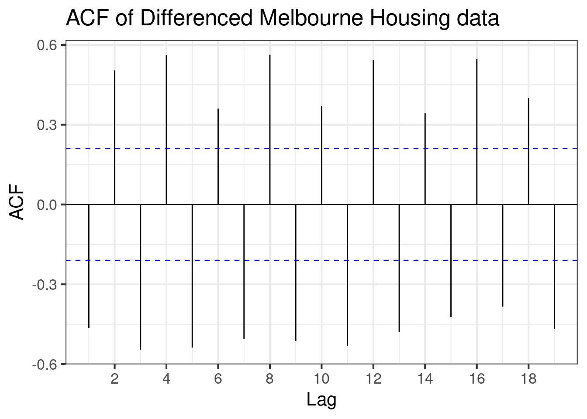
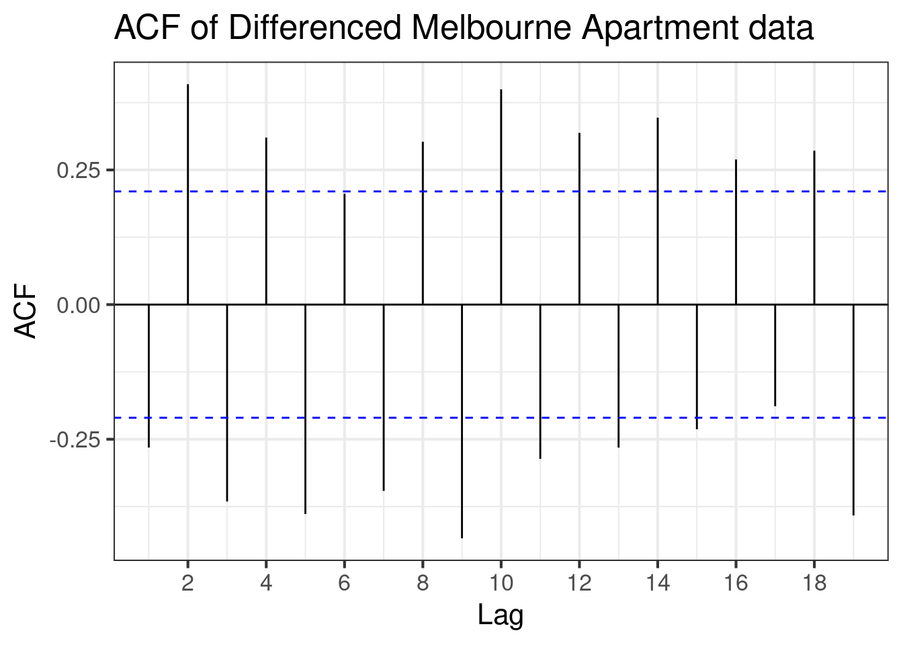
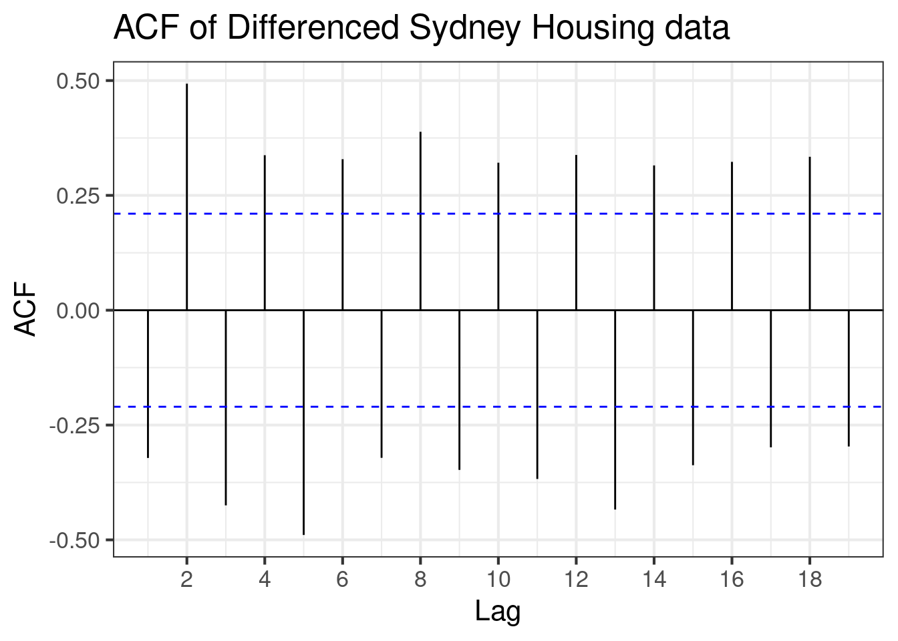
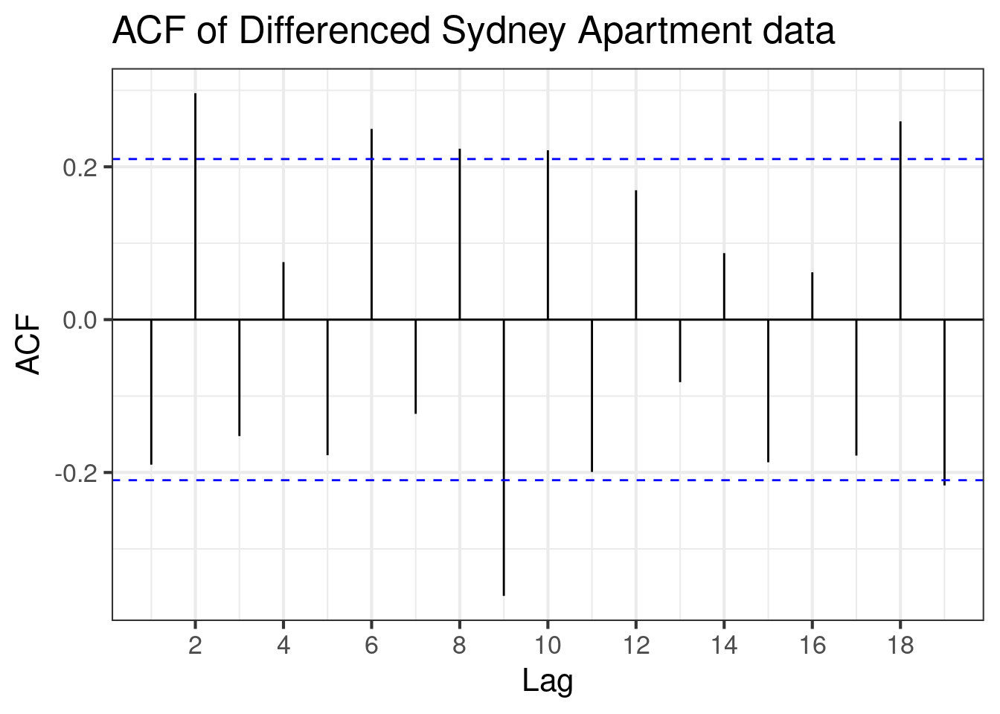
Differenced series PACF’s
Code
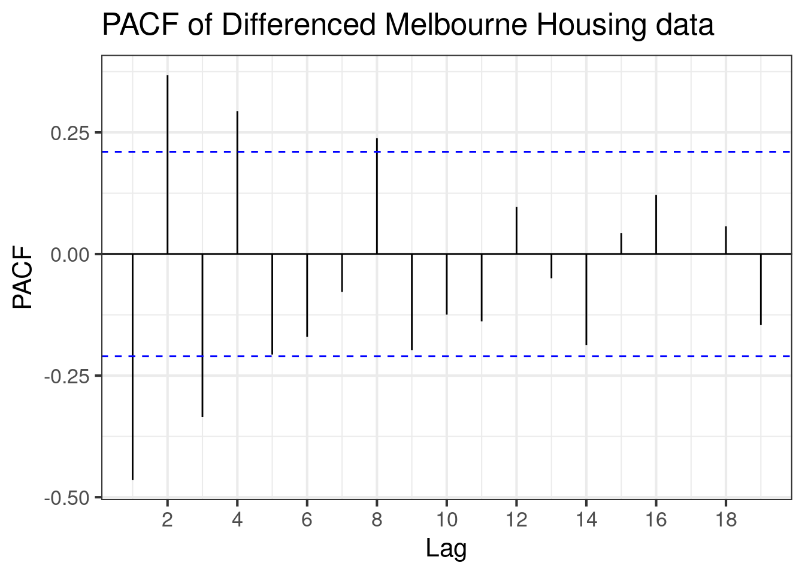
Code
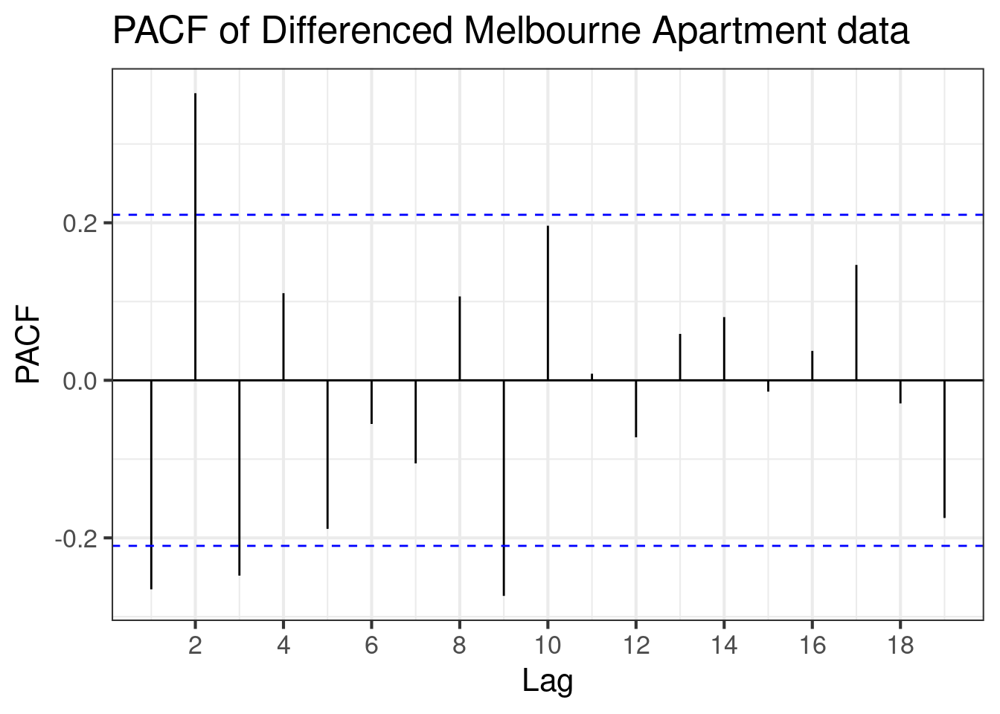
Code
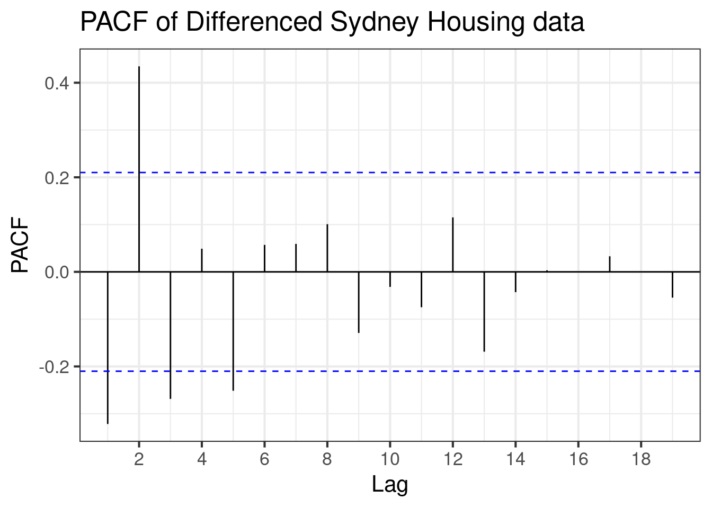
Code
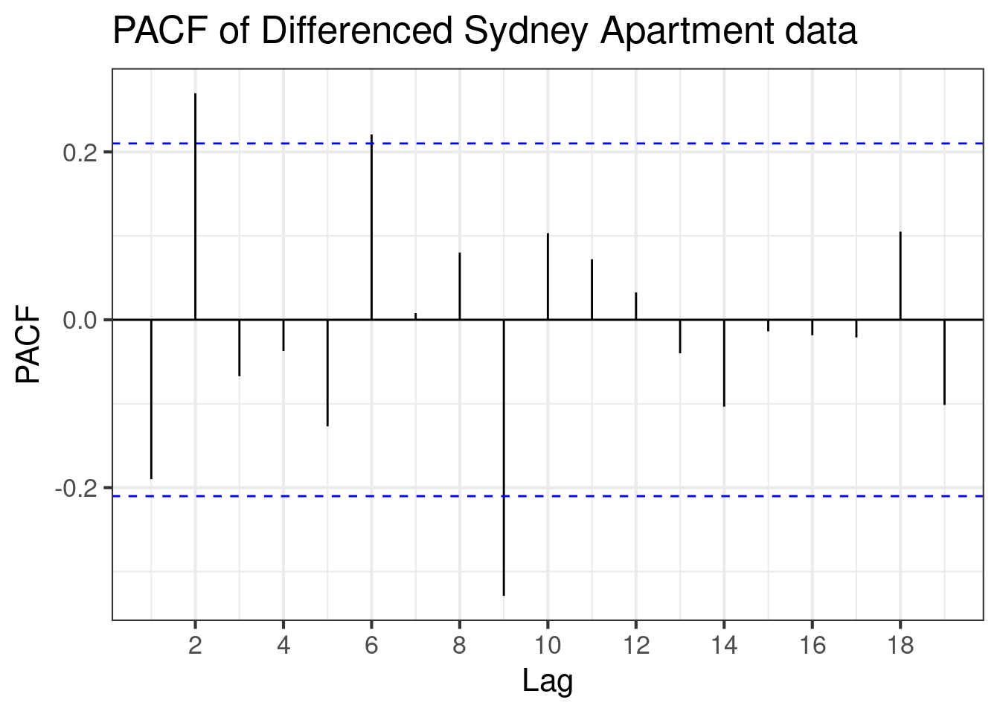
Looking at the ACF’s and PACF’s, the series have strange patterns, but this won’t be a problem. With the ACF’s, there’s a big spike at lag \(1\), then all others hover near \(0\) with few small spikes spread out. With the PACF’s there are small spikes at early lags and then some random fluctuations. This is consistent with stationary processes with short memory; these series likely have an \(\text{AR}(1)\) component as previously mentioned.
The ACF’s show a strong positive first lag correlation, which indicates short run persistence, or momentum, in price changes. This is typical of housing markets and for a model such as a VAR, is captured by adding a lag.
The PACF’s display oscillating behaviour. This means that there are small corrections in price changes, for example, price changes this quarter are positively related to the last quarter’s changes but then negatively related to the second lag, which is the correction. This is expected of housing markets as when prices start to rise they might rise for a short time, but then the rate of change would slow down likely due to affordability issues.
Overall, the behaviour of the ACF’s and PACF’s will not cause any issues, provided that the series are all stationary, which we demonstrate using ADF and KPSS tests again.
Formal Hypothesis tests to determine stationarity (ADF and KPSS):
Code
# ADF test (hm_ stands for homes melbourne)
hm_diff_adf_result <- ur.df(housingdata_diff$house_mel, type = "drift", selectlags = "AIC")
hm_diff_adf_result_sum <- summary(hm_diff_adf_result)
hm_diff_adf_teststat <- round(hm_diff_adf_result_sum@teststat[1], 2)
hm_diff_adf_cval <- round(hm_diff_adf_result_sum@cval[1,2], 2)
#KPSS test
hm_diff_kpss_result <- kpss.test(na.omit(housingdata_diff$house_mel))
hm_diff_kpss_pval <- round(hm_diff_kpss_result$p.value, 2)
# ADF test (am_ stands for apartments melbourne)
am_diff_adf_result <- ur.df(housingdata_diff$appt_mel, type = "drift", selectlags = "AIC")
am_diff_adf_result_sum <- summary(am_diff_adf_result)
am_diff_adf_teststat <- round(am_diff_adf_result_sum@teststat[1], 2)
am_diff_adf_cval <- round(am_diff_adf_result_sum@cval[1,2], 2)
#KPSS test
am_diff_kpss_result <- kpss.test(na.omit(housingdata_diff$appt_mel))
am_diff_kpss_pval <- round(am_diff_kpss_result$p.value, 2)
# ADF test (hs_ stands for houses sydney)
hs_diff_adf_result <- ur.df(housingdata_diff$house_syd, type = "drift", selectlags = "AIC")
hs_diff_adf_result_sum <- summary(hs_diff_adf_result)
hs_diff_adf_teststat <- round(hs_diff_adf_result_sum@teststat[1], 2)
hs_diff_adf_cval <- round(hs_diff_adf_result_sum@cval[1,2], 2)
#KPSS test
hs_diff_kpss_result <- kpss.test(na.omit(housingdata_diff$house_syd))
hs_diff_kpss_pval <- round(hs_diff_kpss_result$p.value, 2)
# ADF test (as_ stands for apartments sydney)
as_diff_adf_result <- ur.df(housingdata_diff$appt_syd, type = "drift", selectlags = "AIC")
as_diff_adf_result_sum <- summary(as_diff_adf_result)
as_diff_adf_teststat <- round(as_diff_adf_result_sum@teststat[1], 2)
as_diff_adf_cval <- round(as_diff_adf_result_sum@cval[1,2], 2)
#KPSS test
as_diff_kpss_result <- kpss.test(na.omit(housingdata_diff$appt_syd))
as_diff_kpss_pval <- round(as_diff_kpss_result$p.value, 2)Code
# Create summary table of stationarity tests
stationarity_summary <- data.frame(
Metric = c("ADF Test Stat", "ADF Result", "KPSS p-value", "KPSS Result"),
House_mel = c(hm_diff_adf_teststat, "Reject", hm_diff_kpss_pval, "Fail to Reject"),
Appt_mel = c(am_diff_adf_teststat, "Reject", am_diff_kpss_pval, "Fail to Reject"),
House_syd = c(hs_diff_adf_teststat, "Reject", hs_diff_kpss_pval, "Fail to Reject"),
Appt_syd = c(as_diff_adf_teststat, "Reject", as_diff_kpss_pval, "Fail to Reject")
)
stationarity_summary |>
knitr::kable(
digits = 2,
caption = "Stationarity Test Results Summary",
col.names = stationarity_summary |>
names() |>
imap(\(x, idx) ifelse(idx>1, paste0("$\\texttt{", x, "}$"), x))
)| Metric | \(\texttt{House_mel}\) | \(\texttt{Appt_mel}\) | \(\texttt{House_syd}\) | \(\texttt{Appt_syd}\) |
|---|---|---|---|---|
| ADF Test Stat | -5.13 | -4.87 | -4.61 | -5.26 |
| ADF Result | Reject | Reject | Reject | Reject |
| KPSS p-value | 0.1 | 0.1 | 0.1 | 0.1 |
| KPSS Result | Fail to Reject | Fail to Reject | Fail to Reject | Fail to Reject |
The results of these tests are the opposite of the earlier results. As a reminder, the ADF null is that the series is non-stationary, and the KPSS null is that the series is stationary.
As the null is rejected in all ADF tests (test statistics are less than the critical value of \(-2.89\)), this leads to the conclusion that the series are all stationary. This is further supported by the KPSS nulls not having enough evidence to reject them. Thus, the conclusion is that the differenced series are all stationary and can be modelled. This conclusion also supports the earlier theory that the series are \(I(1)\), as the series became stationary after the first difference.
Cointegration Relationships
Formal Tests
As the variables all relate to property markets in the two biggest Australian cities, it might be possible that cointegrating relationships exist.
If two or more variables (e.g. housing prices and apartment prices in Melbourne) are both I(1) as established in the previous section, it possible that they can still move together to reach a certain long run equilibrium. Economically, this reflects a market tie such as substitute products for houses and apartments that mean these series move together in the long run.
Cointegration implies that though the variables are non-stationary in levels by themselves, there may be a long run equilibrium relationship.
Engle - Granger Test
The Engle-Granger procedure was conducted to test four possible pairs.
This is a test conducted on the long run regressions of each series on their pair.
For example, let \(y_t\) be median house prices in Melb.
Let \(x\) be house prices in Sydney.
Thus, the long run regression is
\[ y_t = c + \beta x_t + u_t \]
An ADF test is then run on the residuals \(u_t\) of this regression. There is cointegration if the residuals are \(I(0)\), i.e. if the ADF null is rejected.
Here are the results:
Code
hm_hs_test <- housingdata |>
lm(house_mel ~ house_syd, data = _) |>
residuals() |>
adf.test()
hm_hs_p_val <- hm_hs_test |> pluck("p.value") |> round(2)
am_as_test <- housingdata |>
lm(appt_mel ~ appt_syd, data = _) |>
residuals() |>
adf.test()
am_as_p_val <- am_as_test |> pluck("p.value") |> round(2)
am_hm_test <- housingdata |>
lm(house_mel ~ appt_mel, data = _) |>
residuals() |>
adf.test()
am_hm_p_val <- am_hm_test |> pluck("p.value") |> round(2)
as_hs_test <- housingdata |>
lm(house_syd ~ appt_syd, data = _) |>
residuals() |>
adf.test()
as_hs_p_val <- as_hs_test |> pluck("p.value") |> round(2)Code
data.frame(
Relationship = c(
"House prices in Melb and Syd",
"Apartment prices in Melb and Syd ",
"Apartment prices and House prices in Melb",
"Apartment prices and House prices in Syd"
),
"P Value" = c(hm_hs_p_val, am_as_p_val, am_hm_p_val, as_hs_p_val),
Result = rep("Failed to Reject $H_0$", 4)
) |>
(\(table) knitr::kable(
table,
digits = 2,
caption = "Engle Granger Cointegration Test",
col.names = names(table) |>
map(\(x) str_replace_all(x, fixed("."), " "))
))()| Relationship | P Value | Result |
|---|---|---|
| House prices in Melb and Syd | 0.93 | Failed to Reject \(H_0\) |
| Apartment prices in Melb and Syd | 0.46 | Failed to Reject \(H_0\) |
| Apartment prices and House prices in Melb | 0.44 | Failed to Reject \(H_0\) |
| Apartment prices and House prices in Syd | 0.92 | Failed to Reject \(H_0\) |
For all the tested pairs, there was insufficient evidence to reject \(H_0\). Thus, there is no evidence of cointegration with any pair. The series only move together in the short run and don’t move around a common long run equilibrium.
Johansen Test
The Johansen test is used to detect whether a group of \(I(1)\) variables are cointegrated, i.e. whether there is one or more long-run equilibrium relationships.
The Vector Error Correction Model that was used will look like the below:
\[ \Delta \mathbf{y_{t}}=\mathbf{\alpha\beta'y_{t-1}} + \mathbf{\Gamma_{1}\Delta y_{t-1}}+\mathbf{D_{t}} + \mathbf{\varepsilon_{t}} \]
Where:
- \(\mathbf{y_{t}} =\begin{bmatrix} \texttt{house\_mel} & \texttt{house\_syd} & \texttt{appt\_mel} & \texttt{appt\_syd} \end{bmatrix}^{T}\) - \(\mathbf{\Delta y_{t}} = \mathbf{y_{t}}-\mathbf{y_{t-1}}\) is the differenced series - \(\mathbf{\alpha} \in \mathbb{R}^{4\times r}\) is the “adjustment” matrix (response to disequilibrium) - \(\mathbf{\beta} \in\mathbb{R}^{4\times r}\) is the “cointegrating vector” matrix (strength of the cointegrating relationships) - \(\mathbf{D_{t}}\in\mathbb{R}^{4\times1}\) includes the constant and seasonal components
- \(\mathbf{\Gamma_{1}}\in\mathbb{R}^{4\times4}\) are the short run dynamics from lagged differences - \(r=\text{rank}(\mathbf{\alpha\beta'})\)
The existence of cointegration in these variables depend on matrix “rank” of the \(\mathbf{\alpha\beta'}\) matrix, which is denoted as \(\mathbf\Pi\). In the Johansen test, the rank of \(\mathbf \Pi\) is given by \(r\), which will determine the number of cointegrating relationships.
This test was conducted as the Maximum Eigenvalue version, using a \(\text{VAR}(2)\) in levels leading to \(1\) lag of differences, and including quarterly seasonal dummies.
The reasoning behind using a \(\text{VAR}(2)\) is that the series are all \(I(1)\), so only \(1\) lag in differences for the VECM is necessary, as a \(\text{VAR}(2)\) model collapses to a VECM with one lag.
Code
housing_jo_summ <- housingdata |>
tibble() |>
dplyr::select(house_mel, appt_mel, house_syd, appt_syd) |>
ca.jo(
ecdet = "const",
type="eigen",
K = 2,
spec="longrun",
season=4) |>
summary()
data.frame(
Relationship = c("$r\\leq 3$", "$r \\leq 2$", "$r\\leq 1$", "$r=0$"),
`Test Statistic` = pluck(housing_jo_summ, "teststat"),
`Critical Value` = housing_jo_summ |>
pluck("cval") |>
as.data.frame() |>
pull(2),
Result = rep("Fail to Reject", 4)
) |>
knitr::kable(
digits = 2,
caption = "Engle Granger Cointegration Test",
col.names = c("Relationship", "Test Statistic", "Critical Value ($5\\%$)", "Result")
)| Relationship | Test Statistic | Critical Value (\(5\%\)) | Result |
|---|---|---|---|
| \(r\leq 3\) | 2.11 | 9.24 | Fail to Reject |
| \(r \leq 2\) | 5.75 | 15.67 | Fail to Reject |
| \(r\leq 1\) | 16.09 | 22.00 | Fail to Reject |
| \(r=0\) | 26.64 | 28.14 | Fail to Reject |
The test fails to be rejected at the first rank, \(r = 0\), so it is appropriate to stop and conclude that there are no cointegrating relationships at the \(5\%\) level.
This result supports the result from the previous Engle-Granger tests in which no cointegrating pairs were found. While there may be short run relationships, there are no stable long-run equilibrium relationships.
An explanation for no cross-city relationships could be due to city-specific factors such as different state jurisdictions between Melbourne and Sydney creating different property policies and laws, supply and demand differences such as land constraints and migration trends, and separate regional economies. Nation-wide factors may affect properties in both cities, but the differences in regional dynamics mean there is no shared long run equilibrium.
An explanation for no relationships in same-city properties could be due to different policies regarding apartments and houses, different supply dynamics, eg. apartment supply can rise fast with construction resources being allocated while house construction is much slower due to land availability. Furthermore, houses and apartments may serve different markets, such as houses for families and apartments for investors/young buyers, meaning that macroeconomic shocks may impact each market differently.
Implications for Modelling
The Johansen test was conducted using maximum eigenvalue statistics. The null of no cointegrating relationships (\(r=0\)) could not be rejected at the \(5\%\) significance level, suggesting that the four price series do not share any stable long-run equilibrium relationships.
The fact that the variables are \(I(1)\) and are not cointegrated will mean a VAR model in first differences will be used to conduct impulse response analysis and discuss rezoning implications. The VAR will only capture short-run changes as no long-run relationship exists.
The \(\text{VAR}(1)\) model is estimated as
\[ \Delta\mathbf{y_{t}}=\mathbf{c}+\mathbf{\Phi}\Delta \mathbf{y_{t-1}}+\mathbf{\varepsilon_{t}} \]
Where
- \(\Delta\mathbf{y_{t}} =\begin{bmatrix} \Delta\texttt{house\_mel} & \Delta\texttt{house\_syd} & \Delta\texttt{appt\_mel} & \Delta\texttt{appt\_syd} \end{bmatrix}^{T}\)
- \(c\in\mathbb{R}^{4\times1}\) is the intercept vector
- \(\mathbf{\Phi}\in\mathbb{R}^{4\times4}\) is the coefficients matrix
To further illustrate, the first equation will be: \[ \begin{aligned} \Delta\texttt{house\_mel}_{t} = c_{1} & +\alpha_{1,1}\Delta\texttt{house\_mel}_{t-1} \\ & + \alpha_{1,2}\Delta\texttt{appt\_mel}_{t-1} \\ & + \alpha_{1,3}\Delta\texttt{house\_syd}_{t-1} \\ & + \alpha_{1,4}\Delta\texttt{appt\_mel}_{t-1} \\ & + \varepsilon_{1,t} \end{aligned} \]
Which tells us that quarterly change in Melbourne house prices depends on:
- Its own past change (momentum)
- Past change in Melbourne apartments (substitution effects)
- Past growth in Sydney houses and apartments (cross-city spillovers)
- Random shocks (policy, interest rates)
This model will capture short run relationships and model how changes in each property series are affected by past changes in the others.
What if There Was One or More Cointgrating Relationship
If the Johansen test had different parameters, it is possible that it would conclude that there is one or more cointegrating relationship. Though the test would be mis-specified, it is worth noting the implications for modelling if this was the case.
If the variables are all \(I(1)\) but are cointegrated it means:
- There is a long-run equilibrium relationship, as in a linear combination of the variables in stationary \(I(0)\)
- Even though the series can have short term differences, they move together in the long run and deviations from the equilibrium are gradually corrected
Economically this means that prices in different housing markets move together over time, they don’t drift apart forever. As in if Melbourne apartments and houses are cointegrated then over time if houses rise too far above apartment prices they eventually adjust back to a long run ratio.
Regarding the model itself, instead of a \(\text{VAR}(1)\), a Vector Error Correction VECM model would be used, in this case a \(\text{VECM}(1)\), with its model form being the same as what was discussed for the Johansen test.
\[ \Delta \mathbf{y_{t}}=\mathbf{\alpha\beta'y_{t-1}} + \mathbf{\Gamma_{1}\Delta y_{t-1}}+\mathbf{D_{t}} + \mathbf{\varepsilon_{t}} \]
The \(\mathbf{\alpha\beta'}\) or \(\mathbf{\Pi}\) matrix is important here as if \(\mathbf{\beta'y_{t-1}} > 0\) then house prices are above their long run equilibrium relative to apartments, so the coefficient \(\alpha_1\) will have to correct the market downwards the next period, meaning \(\alpha_1\) will be negative.
The long run equilibrium will restore itself through short run dynamics, thus short-run dynamics and long-run equilibrium can be analysed simultaneously.